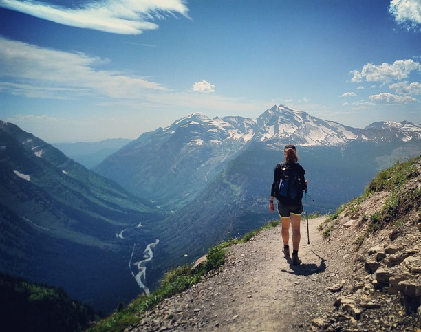
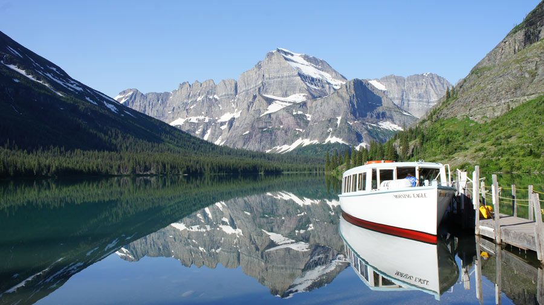

AUGUST 2018 RANGER-LED ACTIVITY GUIDE
However you choose to experience the park, Glacier National Park gas a range-led program designed just for you. Join us in exploring the natural and cultural resources of the park. Ranger-led programs include a variety of guided hikes, talks, boat tours, drop-in programs, and more. Park partners also offer a great selection of fee-based programs. Use this guide to plan your experience today.
August Highlights
Apgar Nature Center
Glacier's Spectacular Night Sky
Accessibility 
Native America Speaks Programs on the Blackfeet Indian Reservation
Glacier Institute
(406) 755-1211
register@glacierinstitute.org
www.glacierinstitute.org

Grinnell Glacier
Michael Brown PHOTO
| A Sampling of Courses Offered in August | ||
| Alpine Behavior | 8/11 | $65 |
| Of Bears and Berries | 8/12 | $65 |
| Family Adventures: Alpine Mysteries* | 8/12-14 | $310 adults/$270 child |
| Geology of Two Medicine Valley | 8/20-23 | $325 |
| Passion for Pikas | 8/25 | $65 |
| Beginning Landscapes in Watercolor | 8/25 | $65 |
| * Lodging and Meals Included | ||
Glacier Park Boat Company Guided Tours and Hikes

Two Medicine Lake Boat Tour
Many Glacier